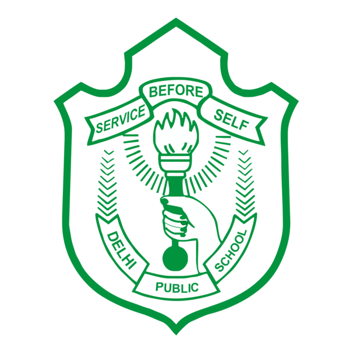
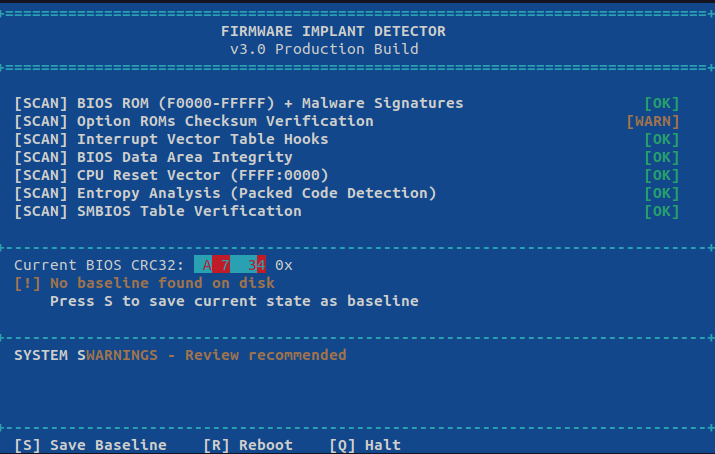
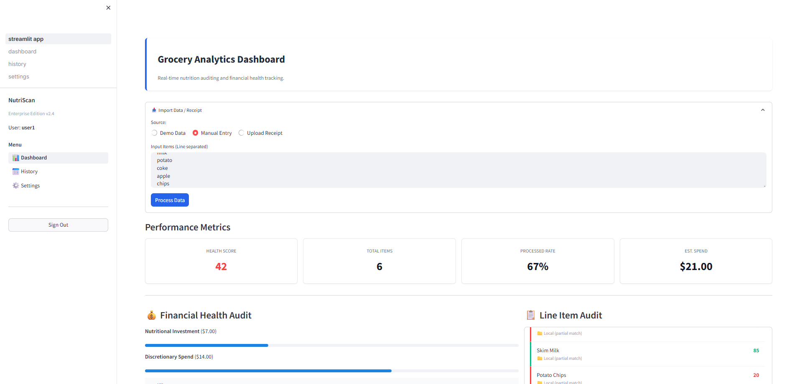
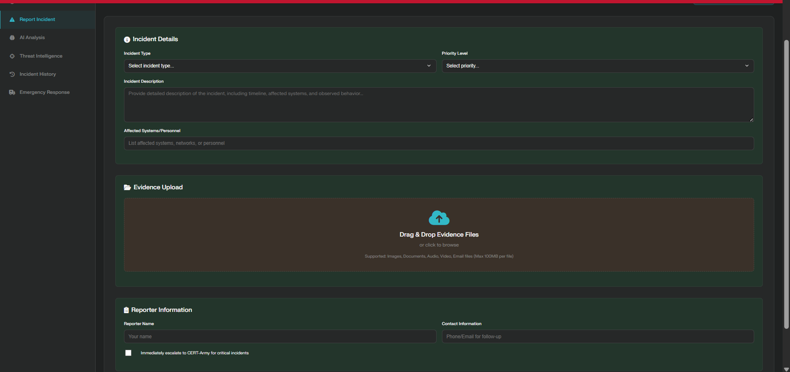

Hello, I'm
|
BTech CSE (DS & AI) student passionate about low-level systems programming, cybersecurity, and building AI-powered solutions.
I am a B.Tech Computer Science student specializing in Data Science & Artificial Intelligence, driven by a fascination with what happens "under the hood" of modern computing. My journey sits at the intersection of Systems Programming and Artificial Intelligence.
Unlike many developers who stay at the application layer, I enjoy peeling back layers of abstraction. I have a strong command of C, C++, and x86 Assembly, which I use to explore firmware security, malware analysis, and embedded systems. I am comfortable working in raw memory environments and using tools like QEMU to test low-level code.
On the application side, I build scalable full-stack solutions using Python, React.js, and Node.js. I integrate modern technologies like Generative AI (Gemini) and Computer Vision into practical web apps using Flask and Streamlit. I am also a proponent of clean DevOps practices, utilizing Docker, GitHub Actions, and CI/CD pipelines to ensure my code is production-ready.
Bachelor of Technology - BTech, CSE (Data Science & AI)
2024 - 2028
Chennai, Tamil Nadu

'">Higher Secondary Education (10+2) - Science Stream
2015 - 2024
Siliguri, West Bengal
BeMyApp
d2f3b9d7-ab33-42bf-84fb-a4ae3f9b4175
Upskillist
hr4yknf5r3j90hr4yknvof3vog4fz0ev
Expires: Apr 2030
BeMyApp
05a22f34-8ed5-470c-a622-3dadf595b0d1
BeMyApp
caf6871f-2a59-4917-b885-8cd9f1d7f244
Upskillist
h7yfn8gjv95ug3h7yfn8ghsvcc2hhn06
Cognitive Class
0f6d92b1f2914b37b84376196d1d1cf7
Cognitive Class
c1b9df1d0bcd441591445a981b28e75c
Upskillist
qp2mv6b9u56fxnrbqp2mv88xb56cb51r
Upskillist
tztkmxu7rrpy15l3rmp4tztkmvb5zm1p

A custom forensic security tool written entirely in x86 Assembly (NASM) that boots directly from USB to audit system firmware integrity without an OS.

Full-stack SaaS application that audits grocery receipts for nutritional quality and financial efficiency using Generative AI and Computer Vision.

Purpose-built platform for defence personnel, families, and veterans to combat cyber threats using AI-powered threat detection and military-grade security.
Web-based fraud detection dashboard for insurance/financial claims with ML predictions and real-time monitoring using WebSocket.
Comprehensive real-time water quality monitoring using IoT sensors integrated with Flask-based web dashboard and AI-powered analysis.
Associated with Dr. MGR Educational and Research Institute
IoT-based environmental monitoring robot using various sensors and modules for real-time data collection.
Learned circuit design, Arduino IDE, and Embedded C programming. Now familiar with basic robotics and looking to explore GPU programming.
Research paper on water footprint analysis methodologies and strategies for sustainable water usage reduction.
Indexed in OpenAIRE
I am currently compiling deep dives and case studies based on my work in Systems Programming, Firmware Security, and Generative AI.
Complete repository with 160 LeetCode solutions in Python — organized by problem with clean, optimized code.